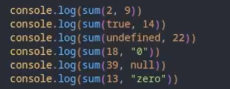
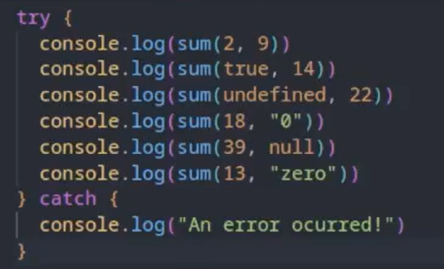
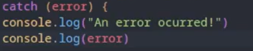
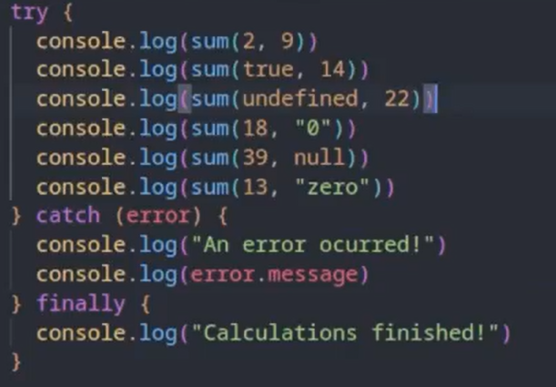
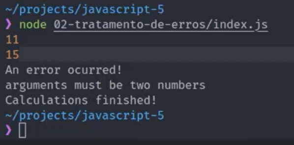
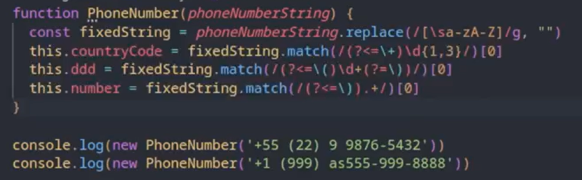
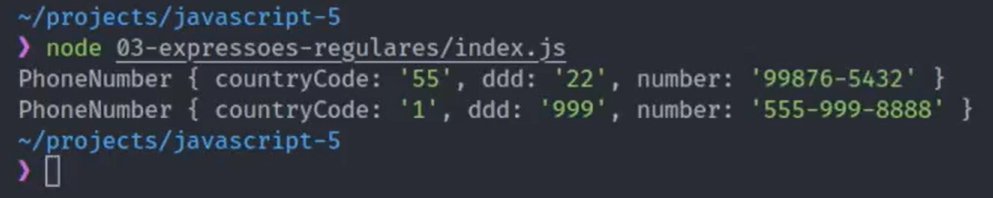

Tópicos Avançados
Tratamento de erros
Vamos mostrar na prática como tratar um erro. Nesse exemplo temos uma função normal que recebe dois parametros e soma os dois números, temos aqui alguns meios de testar essa função se vai dar erro ou não,lembrando que o JavaScript converte alguma situações para números pois estamos usando o conversor Number, então nesse caso o true vai ser convertido para 1.

O try vai ser o nosso tratamente para erros, ele é um bloco de código que vai tentar executar todos os nosso consoles, e caso ele ache o erro vamos usar o outro bloco de código que é o catch, que vai exeutar se acontecer um erro, e vai fazer com que a nossa aplicação não pare, mas continue rodando. Isso serve para deixarmos um outro bloco de código como plano b, caso dê erro podemos fazer outra coisa. Isso serve para podemos fazer algo com esse erro, reornar para o ususário ou qualquer outra coisa.

Podemos dar um parametro para o catch e dar um console.log no erro para mostrar a mensagem padrão.

Temos o finally que tem o uso interessante, ele sempre é executado.

Nesse resultado, ele fez a primeira e a segunda soma, na terceira caiu no catch e mostrou a mensagem de erro e executou o finally e mostrou a mensagem do finally.

Expressões Regulares
- O ^ é usado para capturar a palavra ou a letra que está no inicio.
- O $ é usado para capturar a palavra ou a letra que está antes do final.
- O | é usado para como o operador lógico OU.
- O + é usado para capturar uma sequencia de letras. ex: a+ ele vai retonar se tiver dois aa juntos.
- O \ é usado para indicar que não queremos algo, para escapar. ex: um caracter especial.
- O \w é usado para indicar todos os caracteres que não são especiais, marcando somente letras, números e underscore, deixando de marcar ponto, espaço ou qualquer outro caracter especial.
- O \W (maiúsculo) é usado para indicar todos os caracteres especiais, faz o contrário do \w.
- O \d é usado para indicar todos os numeros.
- O \D (maiúsculo) é usado para indicar todos os caracteres que não são numeros, faz o contrário do \d.
- O \s é usado para indicar todos os espaços.
- O \S (maiúsculo) é usado para indicar todos os caracteres que não são espaços, faz o contrário do \s.
- O . é usado para indicar que queremos capturar qualquer caracter. ex: (..) pegar dois caracter dentro de um parenteses.
- O [] é usado para agrupar, podedendo ser passados alguns parametros, como: [atb], [a-z]
- O {} é usado para agrupar, podedendo ser passados alguns parametros, como: a{2,3} Pegaria todos os a que estivessem em grupos de 2 ou 3.
- Look ahead(positive) - Quando queremos agrupar algo e passamos um parametro que esteja a frente, ex: or(?=\s) Nesse caso vamos pegar os or que depois vem um espaço.
- Look ahead(negative) - Quando queremos agrupar algo e passamos um parametro que esteja a frente, mas nesse caso vamos praticamente negar o positive, basta troca o = por um !, ex: or(?!\s) Nesse caso vamos pegar os or que não vem um espaço depois.
- Look behind(positive) - Quando queremos agrupar algo e passamos um parametro que esteja atras, ex: (?<=l)or Nesse caso vamos pegar os or que tem uma letra l antes.
- Look behind(negative) - Quando queremos agrupar algo e passamos um parametro que esteja atras, mas nesse caso vamos praticamente negar o positive, basta troca o = por um !, ex: (?"sinal de menor"!l)or Nesse caso vamos pegar os or que não tem uma letra l antes, lembrando que dentro desse parametro poderiamos passar uma expressão usando o | ou qualquer outro metodo acima.
Modo prático de como usar
Usamos o metodo replace que é disponível para as strings, ele permite substituir. Nesse caso o \s seleciona todos os espaços em branco, depois seleciona todas as letras primeiro as letras minúsculas de a à z e depois as maiúsculas, passamos a flag g para pegar toda a string e substituimos por nada, que é o mesmo que "".
Country Code - Pegamos a string já corrigida e usamos o método match, usamos o look behind, escapamos o + com a contra barra, \d para pegar os digitos, usamos as chaves para pegar de 1 a 3 numeros. O método match deolve um array, e como só queremos o primeiro valor, usamos o [0] para retonar somento o que queremos.
DDD - Pegamos a string já corrigida e usamos o método match, usamos o positive look behind, escapamos o ( com a contra barra, \d para pegar os digitos, o + para pegar qualquer quantidade, e vamos colocar um look ahead, usamos depois um contra barra para escapar ), usamos o [0] para retonar somento o que queremos.
Telephone Number - Pegamos a string já corrigida e usamos o método match, usamos o positive look behind, escapamos o ) com a contra barra, usamos o ponto para pergar o - e o + para pegar qualquer quantidade de caracter, usamos o [0] para retonar somento o que queremos.

E como saída temos:

Flags
- Por padrão a expressão regular só vai pegar a primeira aparição.
- Global(g) - utilizada para pegar por toda ocorrencia.
- Insentive(i) - utilizada para não diferenciar maúsculas e minúsculas..
- Multi Line(m) - utilizada para capturar o inicio e o final de cada linha.